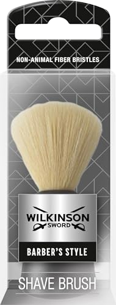

ZilberHaar Escova de Javali
Cerdas de javali ajudam a distribuir produto de forma uniforme
Escovas, pentes e conjuntos simples que ajudam a alinhar a barba, distribuir produto e dar mais ordem ao cuidado diário. Começa pelas escolhas mais fortes e usa os guias da revista para resolver a dúvida que ainda falte.
Indicada para quem tem barba média a densa e quer alinhar os fios e distribuir melhor óleo ou bálsamo.
Ver produto
Indicado para retoques rápidos em barba, bigode e cabelo durante o dia.
Ver produtoOs guias no fim ajudam a perceber quando basta um pente, quando a escova faz mais diferença e em que fase compensa ter ambos.
Quando a barba ganha comprimento, estes acessórios deixam de ser detalhe e passam a afetar o resultado final.
Cerdas de javali ajudam a distribuir produto de forma uniforme

Inclui escova, pente e tesoura para a base do cuidado diário

Os dois ajudam a manter a barba arrumada, mas não resolvem exatamente o mesmo problema.
Um acessório serve melhor barbas densas, outro resolve retoques rápidos e outro é boa porta de entrada.
Indicada para quem tem barba média a densa e quer alinhar os fios e distribuir melhor óleo ou bálsamo.
Indicado para retoques rápidos em barba, bigode e cabelo durante o dia.
Indicado para quem quer começar a cuidar da barba com escova e pente ou oferecer um conjunto simples.
Se tens dúvidas entre escova, pente ou kit simples, estes artigos ajudam a ligar o acessório ao comprimento e ao tipo de barba.
Não. A escova trabalha melhor a distribuição de produto e a disciplina; o pente é mais prático para alinhamento e retoque rápido.
Vale quando a barba já tem algum comprimento e queres uma rotina mais cuidada. Em barbas muito curtas, muitas vezes é cedo.
Não precisas de comprar tudo. Basta escolher o que resolve o estado atual da tua barba.